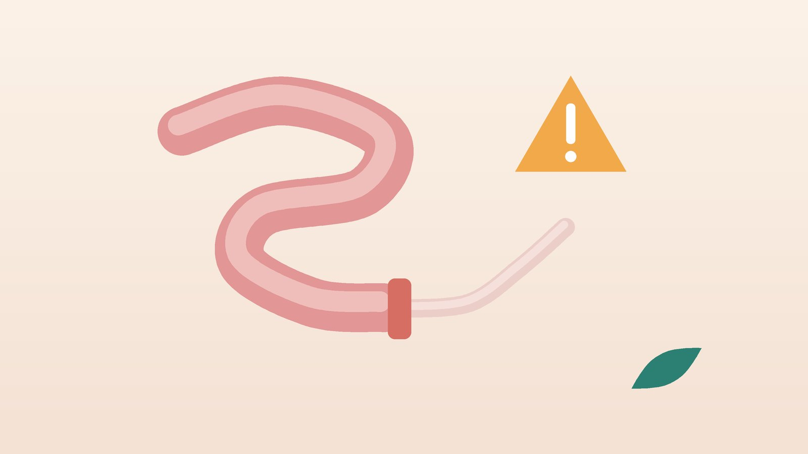

건강 칼럼 · 소화기 · 인천 서구 가정동·청라 장폐색 한의원
배가 부풀고 방귀·대변이 멈췄다면, 장폐색 응급 신호와 회복기 관리

이런 증상이면 바로 병원에 가세요
- 배가 쥐어짜듯 아픈 것이 몇 분 간격으로 되풀이되며 점점 심해진다
- 배가 북처럼 팽팽하게 부풀어 오른다
- 먹은 것이 없는데도 계속 토하고, 토한 것이 초록색이거나 대변 냄새가 난다
- 반나절 넘게 방귀도 대변도 전혀 나오지 않는다
- 예전에 배 수술(맹장, 제왕절개, 위·대장 수술 등)을 받은 적이 있다
- 사타구니나 배꼽에 볼록 나온 덩어리가 아프면서 손으로 밀어도 들어가지 않는다
이 목록은 진단 도구가 아닙니다. 위의 1~4번 중 두 가지 이상이 겹치거나 6번에 해당하면 한의원이 아니라 응급실로 바로 가세요.
응급실로 가야 하는 신호와 하면 안 되는 일
- 막힘의 4가지 신호: 복통이 심해지고 배가 부풀며 토하고 방귀·대변이 멈추면 장폐색을 먼저 의심합니다.
- 초록색·대변 냄새 구토: 막힌 장의 내용물이 거꾸로 올라오는 신호일 수 있습니다.
- 열과 딱딱한 배: 배 전체가 판자처럼 딱딱하고 열이 나면 복막염일 수 있습니다.
- 피 섞인 변, 식은땀: 장이 상하고 있을 수 있으니 119를 부르세요.
- 들어가지 않는 탈장: 아프고 단단해지며 안 들어가면 장이 끼인 응급 상황입니다.
- 아이의 장중첩 신호: 아이가 갑자기 자지러지게 울다 멈추기를 되풀이하며 다리를 배 쪽으로 당기거나, 딸기잼 같은 붉은 변을 보면 바로 응급실로 가세요.
집에서 하면 안 되는 일: 증상이 있는 상태에서 변비약, 관장, 한약, 침, 배 마사지로 혼자 뚫어 보려고 하지 마세요. 더 위험해지고 진단이 늦어집니다. 물과 음식도 먹지 말고 병원으로 가세요.
장폐색은 왜 생기고, 어떻게 진단하나요?
장이 바깥에서 눌리거나 안에서 막히는 기계적 장폐색과, 막힌 곳은 없는데 장이 움직임을 멈추는 마비성 장폐색으로 나눕니다.
- 수술 뒤 유착: 가장 흔한 원인으로, 배 수술 뒤 들러붙은 띠가 장을 조이며 몇 년 뒤에도 생길 수 있습니다.
- 탈장: 사타구니·배꼽·흉터 틈으로 빠진 장이 끼인 경우입니다.
- 종양: 대장암 같은 혹이 장을 서서히 좁혀 막습니다.
- 장꼬임(염전): 장이 꼬여 피가 통하지 않게 되는 위험한 상태입니다.
- 장중첩: 장이 옆 장 안으로 말려 들어가는 것으로, 주로 어린아이에게 생깁니다.
- 염증성 장질환: 크론병처럼 염증이 반복된 자리가 좁아집니다.
- 분변매복: 거동이 불편한 어르신에게 단단한 변이 뭉쳐 막습니다.
- 마비성 장폐색: 수술 직후, 전해질 이상, 마약성 진통제 같은 약물 때문에 장이 멈춥니다.
병원에서는 복부 X선으로 고인 가스와 물을 보고, 복부 CT로 막힌 위치와 원인, 장에 피가 통하는지를 확인합니다.
한의학은 장폐색 뒤의 몸을 어떻게 보나요?
옛 의서에서는 배가 아프고 부풀며 위아래가 모두 통하지 않는 병을 관격(關格), 장결(腸結) 같은 이름으로 기록했습니다. 그러나 오늘날 장폐색은 영상 검사와 외과 치료가 먼저입니다.
한의학은 막힘이 풀린 뒤를 돕습니다. 금식과 수술로 약해진 소화 기운(비위), 배가 차서 장이 더딘 상태, 긴장으로 가스가 차는 상태, 진액이 줄어 변이 마르는 상태를 나누어 봅니다.
회복기의 몸은 어떤 유형일까?
아래 구분은 병원 치료가 끝나고 상태가 안정된 뒤에 쓰는 한의학적 분류입니다. 지금 막힘 증상이 있다면 유형을 따지지 말고 병원으로 가세요.
1. 비위허약(脾胃虛弱) 기운이 빠진 유형
- 이런 분에게 많아요
- 금식과 입원 뒤 퇴원한 분
- 나타나는 모습
- 조금만 먹어도 더부룩하고 입맛이 돌아오지 않는다
- 함께 오는 몸의 신호
- 기운 없음, 묽은 변, 체중 감소
- 진찰에서 보이는 모습
- 혀가 옅고 배를 누르면 힘이 없음
- 치료 방향
- 소화 기운을 북돋우는 방향 (향사육군자탕 계열)
- 오늘부터 해 볼 것
- 미음과 죽부터 시작해 하루 5~6번 조금씩 나누어 드세요.
2. 중초허한(中焦虛寒) 배가 찬 유형
- 이런 분에게 많아요
- 배 수술 뒤 장 움직임이 더딘 분
- 나타나는 모습
- 배가 차고 꾸르륵거리며 따뜻하게 하면 편하다
- 함께 오는 몸의 신호
- 손발 참, 가스, 은근한 복통
- 진찰에서 보이는 모습
- 배가 차갑고 맥이 가라앉음
- 치료 방향
- 속을 데워 장의 움직임을 돕는 방향 (대건중탕 계열)
- 오늘부터 해 볼 것
- 배를 덮는 얇은 담요를 쓰고, 찬 음료는 미지근하게 바꾸세요.
3. 기체(氣滯) 가스가 차는 유형
- 이런 분에게 많아요
- 재발이 걱정돼 늘 긴장한 분
- 나타나는 모습
- 식사 뒤 배가 빵빵하고 트림·방귀가 잦다
- 함께 오는 몸의 신호
- 옆구리 답답함, 한숨, 얕은 잠
- 진찰에서 보이는 모습
- 배가 고르게 부풀고 맥이 팽팽함
- 치료 방향
- 막힌 기운을 풀어 주는 방향 (시호소간산 계열)
- 오늘부터 해 볼 것
- 식후 10분 천천히 걷고, 탄산음료와 빨대 사용을 줄여 보세요.
4. 진액부족(津液不足) 변이 마르는 유형
- 이런 분에게 많아요
- 변비가 오래된 어르신
- 나타나는 모습
- 변이 토끼똥처럼 단단하고 며칠씩 거른다
- 함께 오는 몸의 신호
- 입 마름, 피부 건조, 물을 적게 마심
- 진찰에서 보이는 모습
- 혀가 마르고 갈라짐
- 치료 방향
- 장을 적셔 변을 무르게 하는 방향 (마자인환 계열)
- 오늘부터 해 볼 것
- 물을 한 번에 많이 마시기보다 하루 종일 조금씩 나누어 드세요.
한의원에서는 어떻게 진찰하나요?
- 병원 기록 확인: 원인과 수술 여부, 퇴원 때 받은 식사 안내와 약을 먼저 확인합니다.
- 지금 상태 점검: 막힘이 다시 의심되면 치료하지 않고 바로 병원으로 안내합니다.
- 배와 맥 진찰: 배의 긴장도와 온도, 누를 때 아픈 곳, 혀와 맥을 함께 봅니다.
- 체성분 검사: 회복 중 줄어든 근육량을 확인해 식사와 한약 방향에 참고합니다.
침·약침·한약 치료는 어떻게 하나요?
한의 치료는 급성 장폐색 때 쓰지 않습니다. 병원 진료로 막힘이 풀리고 상태가 안정된 뒤, 회복을 돕고 재발 위험을 줄이는 생활 관리와 함께 시행합니다. 수술 뒤 장운동 회복에 침을 쓴 연구가 있지만 규모가 작거나 결과가 엇갈려 효과를 단정하기 어렵습니다.
1. 침 치료
- 족삼리(足三里): 무릎뼈 바깥 아래로 손가락 네 개 내려간 정강이 바깥쪽으로, 소화 기능 회복에 가장 많이 연구된 자리입니다.
- 상거허(上巨虛): 족삼리에서 손가락 네 개 더 아래로, 대장의 움직임과 관련해 고르는 자리입니다.
- 내관(內關): 손목 안쪽 주름에서 손가락 세 개 위 두 힘줄 사이로, 메스꺼움을 덜 때 씁니다.
- 합곡(合谷): 손등 엄지와 검지 뼈 사이로, 긴장을 풀 때 함께 씁니다.
수술 흉터와 배 위에는 침을 놓지 않고 팔다리 위주로 치료하며, 배가 찬 분은 흉터를 피해 배 주변에 온열 요법을 시행합니다.
2. 약침
약침은 회복기에 등의 비수(脾兪)·위수(胃兪)처럼 소화와 관련된 자리에 소량 놓으며, 수술 부위와 배에는 놓지 않습니다. 임신 중에는 주수와 상태를 확인한 뒤 피해야 할 부위를 제외하고 시행합니다.
3. 한약
입맛과 소화, 장 움직임, 변비 상태에 맞춰 탕약을 처방합니다. 회복기 소화 문제는 비교적 짧게 쓰고, 유착으로 재발을 겪은 분은 생활 관리와 함께 경과를 보며 기간을 정합니다. 복용 중인 약은 알려 주시면 확인해 처방하며, 처방약은 담당 의사와 상의 없이 끊지 마세요. 임신 중이거나 크론병, 대장암 수술 병력이 있다면 진료 때 꼭 알려 주세요. 확인 후 안전한 약재로 처방합니다. 한약은 원장이 원내 탕전실에서 약재 선별부터 달이는 과정까지 직접 관리하며, 10일분씩 처방해 복용 경과를 보고 약재 구성과 양을 조절합니다.
관리는 어떤 순서로 진행되나요?
- 응급 진단과 치료 응급실·외과에서 원인을 찾고 금식, 수액, 코위관, 필요하면 수술로 막힘을 풉니다.
- 식사 다시 시작 병원 안내에 따라 물, 미음, 죽, 부드러운 밥 순서로 천천히 늘립니다.
- 회복기 관리 상태가 안정되면 침·한약으로 입맛과 소화, 장 움직임, 기력 회복을 돕습니다.
- 재발 줄이기 씹는 습관, 섬유질 조절, 변비 관리, 꾸준한 걷기로 다시 막히지 않게 생활을 다듬습니다.
회복 속도는 원인과 수술 여부에 따라 크게 다르며, 막힘 증상이 다시 생기면 어느 단계에서든 바로 병원으로 갑니다.
재발을 줄이는 생활 관리
- 꼭꼭 씹기: 한 숟가락에 20번 이상 씹어 음식이 잘게 부서진 상태로 넘어가게 하세요. 복통이 생기면 바로 병원에 가세요.
- 조금씩 자주: 한 번에 많이 먹지 말고 하루 끼니를 5~6번으로 나누어 장의 부담을 줄이세요. 토하거나 방귀가 멈추면 바로 병원으로 가세요.
- 질긴 덩어리 음식 조심: 유착이 있는 분은 감 껍질, 미역줄기, 떡 덩어리, 버섯 기둥처럼 질긴 음식을 줄이거나 잘게 잘라 드세요. 배가 아프면 바로 병원에 가세요.
- 물과 변비 관리: 물을 나누어 마시고 변비가 길어지면 진료를 받으세요. 막힘 증상이 있으면 변비약 대신 바로 병원으로 가세요.
- 수술 뒤 가벼운 걷기: 의료진이 허락하면 하루 여러 번 짧게 걸으세요. 배가 쥐어짜듯 아프면 바로 병원에 가세요.
다른 진료가 함께 필요한 경우
- 응급실·외과: 장폐색이 의심되는 모든 경우, 탈장이 들어가지 않는 경우에는 먼저 진단과 치료를 받습니다.
- 소화기내과: 변이 가늘어지거나 피가 비치고 체중이 줄면 대장내시경으로 종양 여부를 확인합니다.
- 소아청소년과·소아응급실: 아이가 발작적으로 울고 붉은 변을 보면 장중첩을 확인합니다.
자주 묻는 질문 Q&A
- Q1. 장폐색을 한의원에서 치료할 수 있나요?
- 급성 장폐색은 한의원에서 치료하는 병이 아닙니다. 응급실·외과에서 진단과 치료를 먼저 받으시고, 막힘이 풀린 뒤 회복기와 재발 예방 관리를 한의원에서 도울 수 있습니다.
- Q2. 수술 후 또 막힐까 걱정돼요.
- 유착은 수술 뒤 오랜 시간이 지나도 다시 문제를 일으킬 수 있습니다. 꼭꼭 씹기, 질긴 음식 조심, 변비 관리로 위험을 줄이고, 증상이 생기면 바로 병원에 가세요.
- Q3. 변비약을 먹어도 되나요?
- 장이 막힌 상태에서 변비약이나 관장을 하면 위험할 수 있습니다. 복통·구토·배 부풂이 있으면 먼저 병원 진단을 받고, 변비약 사용은 의사의 판단에 따르세요.
- Q4. 부분 장폐색은 저절로 풀리기도 하나요?
- 병원에서 금식과 수액, 코위관 치료로 풀리는 경우가 있지만, 그 판단은 영상 검사를 보며 의료진이 합니다. 집에서 저절로 풀리기를 기다리면 안 됩니다.
- Q5. 퇴원 후 언제부터 한의원 치료를 받을 수 있나요?
- 막힘 증상이 없고 식사를 시작해 상태가 안정된 뒤부터 가능합니다. 퇴원 때 받은 안내와 복용 약을 가져오시면 함께 확인합니다.
- Q6. 아이도 장폐색이 생기나요?
- 아이에게는 장중첩이 대표적입니다. 갑자기 자지러지게 울며 다리를 배로 당기거나 붉은 변을 보면 바로 응급실로 가세요.
- Q7. 배 마사지를 해도 되나요?
- 막힘이 의심될 때는 배를 누르거나 문지르지 마세요. 회복 뒤에도 수술 흉터 주변은 세게 누르지 말고, 손바닥으로 따뜻하게 덮어 주는 정도로 하세요.
- Q8. 혼자 눌러 볼 만한 혈자리가 있나요?
- 회복기에 증상이 없을 때 족삼리를 엄지로 부드럽게 눌러 주세요. 복통이나 구토가 있으면 지압 대신 바로 병원으로 가세요.
진료 안내
- 진료시간
- 평일 09:00~20:00 (점심시간 13:00~14:00, 접수 마감 19:30)
토·일·공휴일 09:00~15:00 (접수 마감 14:30) - 주소
- 인천광역시 서구 가경주로 46, 2층 (가정동)
인천2호선 가정중앙시장역 인근
영상으로 길 안내 보기 → - 주차
- 한의원 건물 바로 앞 1층 도원주차장, 또는 도보 5분 거리 가정주차장
- 예약
- 예약 바로가기 또는 전화 예약
진료시간은 사정에 따라 바뀔 수 있으니 방문 전 전화로 확인해 주세요.
참고 자료
- 질병관리청 국가건강정보포털 — 원문
- Jackson PG, Raiji MT. Evaluation and management of intestinal obstruction. American Family Physician, 2011
- Ng SSM, et al. Electroacupuncture reduces duration of postoperative ileus after laparoscopic surgery for colorectal cancer. Gastroenterology, 2013
※ 이 글은 일반적인 건강 정보이며, 개인의 상태에 따라 치료 방법과 결과는 다를 수 있습니다. 정확한 진단과 치료는 진료를 통해 결정됩니다. 침·약침 시술 후 드물게 멍, 통증 등이 생길 수 있습니다.